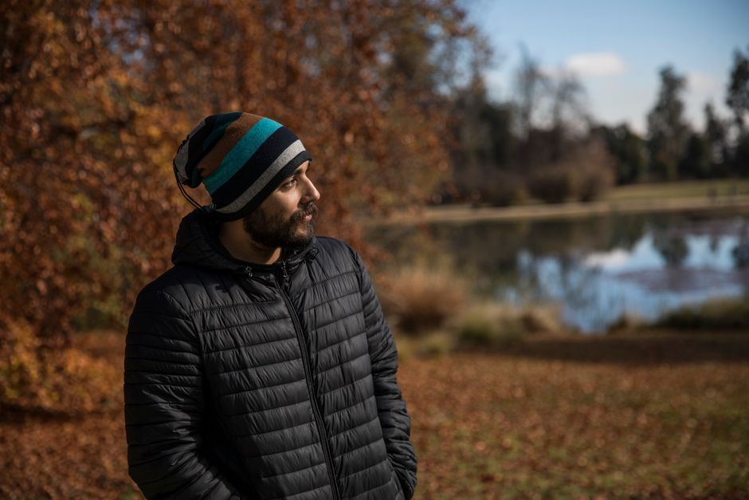
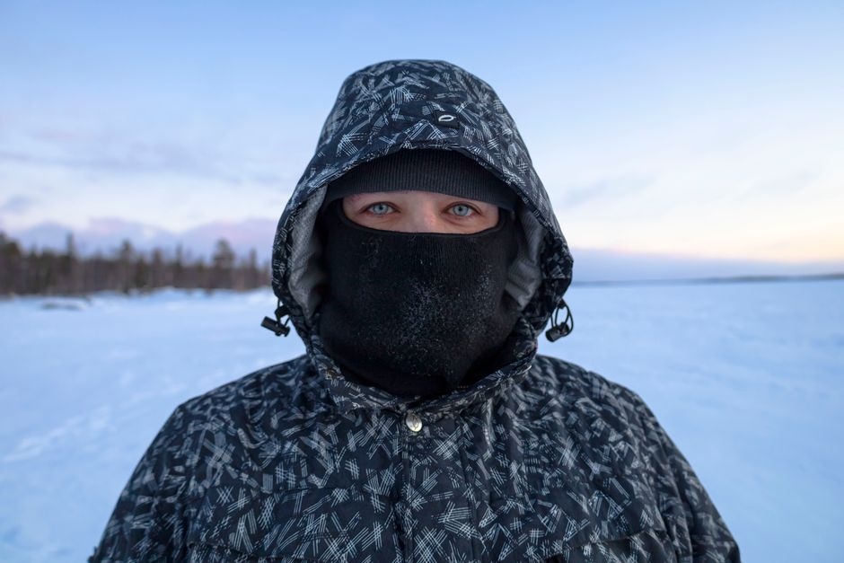
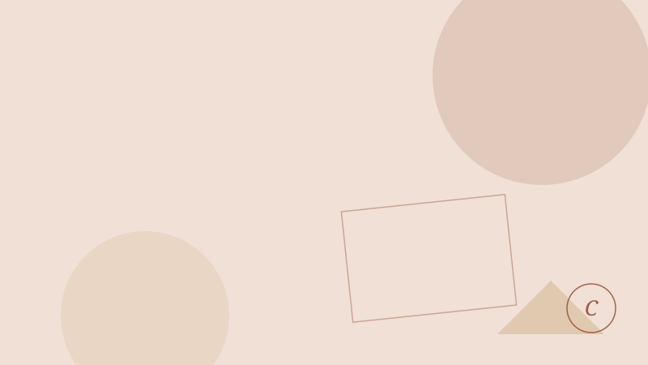
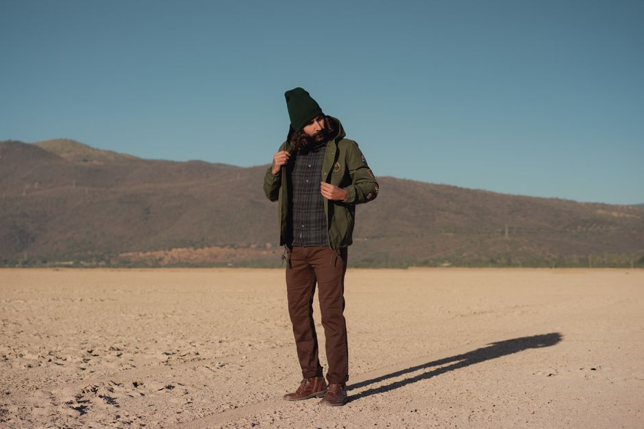
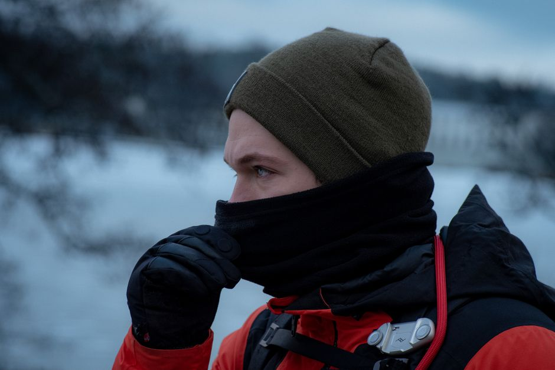
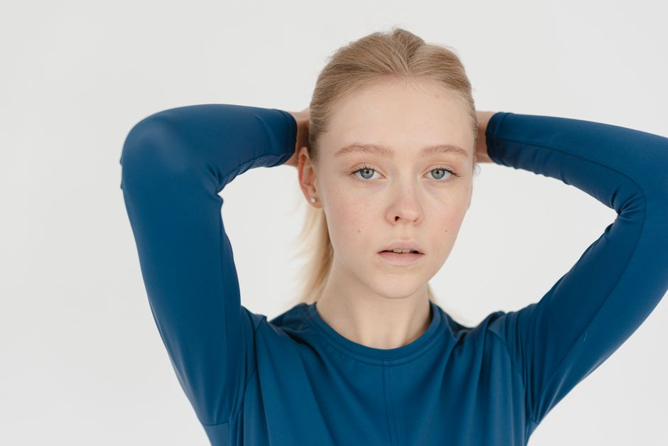
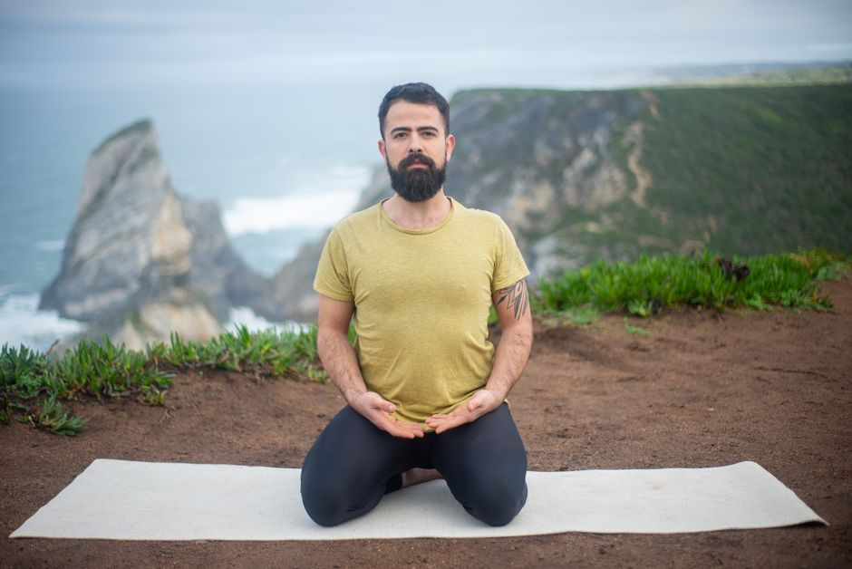

Pantalones térmicos acolchados con cintura elástica ajustable para mujer
Pantalones térmicos acolchados para mujer con cintura elástica ajustable. Calidez, comodidad y libertad de movimiento en días fríos. ¡Descúbrelos ahora!
0 vistas

Gorro térmico de lana merino con forro de seda para hombre
Gorro térmico de lana merino con forro de seda para hombre. Calidez natural y máximo confort en invierno. ✓ Envíos gratis
0 vistas

Bufanda térmica tubular convertible con forro polar interno para hombre
Bufanda térmica tubular con forro polar. Versátil y práctica para días fríos. Úsala de múltiples formas: al cuello, como gorro o media cara. ¡Descubre la comodidad!
0 vistas
Medias térmicas acolchadas con refuerzo en plantas y talones para mujer
Medias térmicas acolchadas con refuerzo en plantas y talones. Calidez y confort para tus pies en invierno. ¡Descubre nuestras medias ahora!
0 vistas

Camiseta térmica de manga larga con cuello alto para mujer
Camiseta térmica de manga larga con cuello alto para mujer. Calidez, confort y estilo en una sola prenda. Ideal como base o para usar sola.
0 vistas
Abrigo largo de lana con cintura ajustable y bolsillos para mujer
Abrigo largo de lana con cintura ajustable y bolsillos. Cálido, elegante y versátil. Perfecta prenda de invierno que se adapta a tu figura.
0 vistas

Guantes térmicos convertibles con puntas desmontables para pantalla táctil para hombre
Guantes térmicos convertibles con puntas desmontables. Abriga tus manos sin renunciar a tu móvil. Diseño inteligente y funcional para el frío.
0 vistas
Chaqueta térmica acolchada con capucha para niño
Chaqueta térmica acolchada con capucha para niños. Diseño ligero y cómodo que mantiene el calor corporal. Protege del frío y el viento. ¡Compra ahora!
0 vistas

Chaleco térmico sin mangas con relleno de plumón para mujer
Chaleco térmico sin mangas con relleno de plumón para mujer. Ligero, comprimible y versátil. Abrigo perfecto para cualquier estación.
0 vistas

Pantalón térmico acolchado con cintura elástica ajustable para hombre
Pantalón térmico acolchado para hombre con cintura elástica ajustable. Máxima calidez y comodidad en invierno. Ideal para casa y actividades al aire libre.
0 vistas
Gorro térmico de lana merino con forro polar para mujer
Gorro térmico de lana merino con forro polar para mujer. Calidez, comodidad y regulación térmica en invierno. Descubre la combinación perfecta.
0 vistas

Bufanda térmica tubular con aislamiento de fibra sintética para hombre
Bufanda térmica tubular con fibra sintética aislante. Versátil, cómoda y práctica para el invierno. Protección completa del cuello y cara.
0 vistas

Medias térmicas acolchadas con refuerzo en planta de pie para mujer
Medias térmicas acolchadas con refuerzo en planta de pie. Calidez y comodidad para invierno. Diseño especializado para mantener tus pies abrigados.
0 vistas

Camiseta térmica de manga larga con costuras planas para mujer
Camiseta térmica de manga larga para mujer con costuras planas. Abrigo confortable en climas fríos sin marcar. Tejido aislante de calidad.
0 vistas

Abrigo de plumas ligero y compresible para hombre con capucha desmontable
Abrigo de plumas ligero con capucha desmontable. Máxima calidez sin peso. Ideal para otoño e invierno. Compresible y cómodo.
0 vistas

Guantes térmicos impermeables con forro de lana merino para hombre
Guantes térmicos impermeables con forro de lana merino. Calidez natural, protección contra lluvia y nieve. Perfectos para senderismo y esquí.
0 vistas